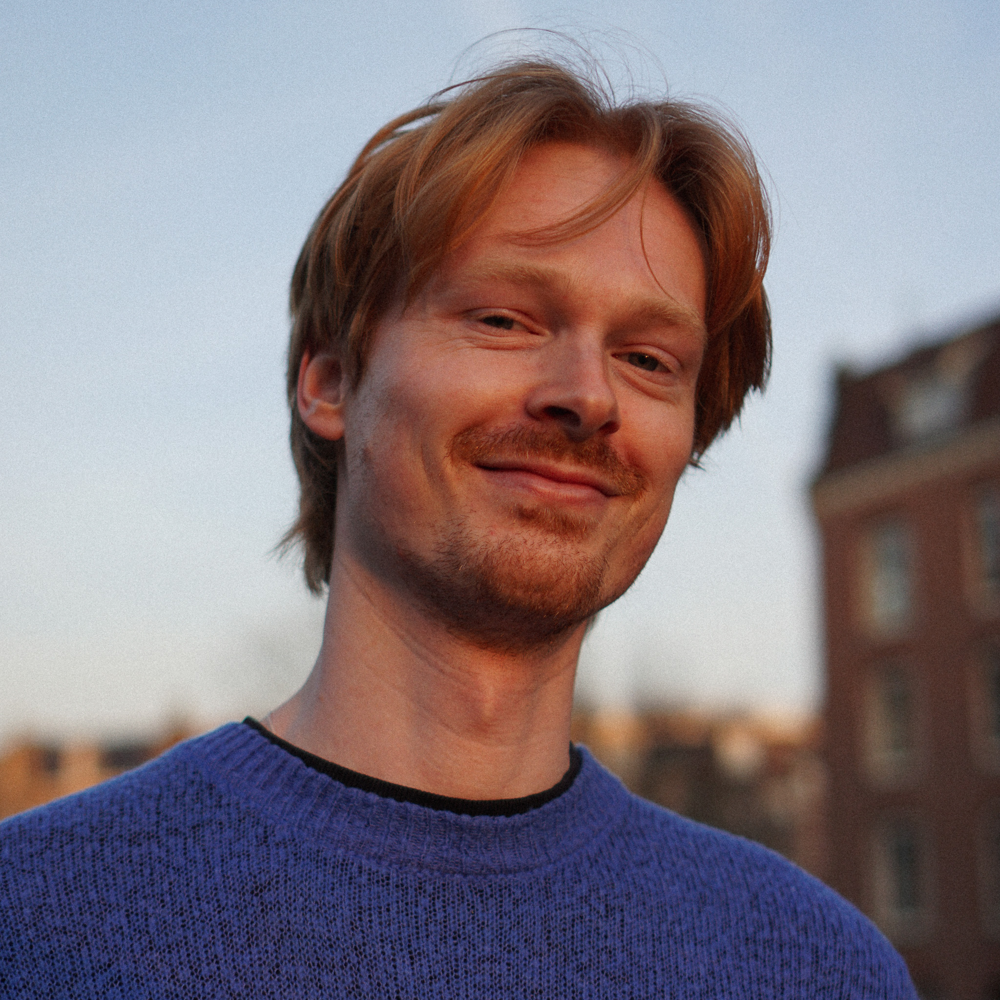
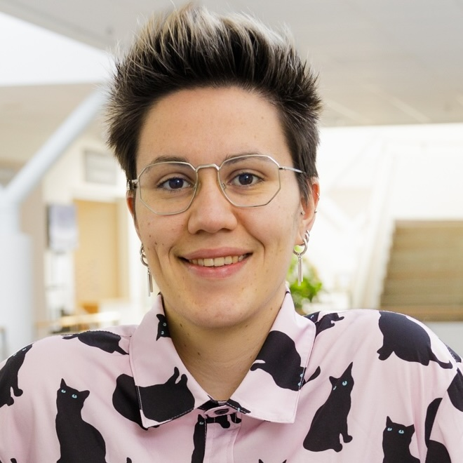
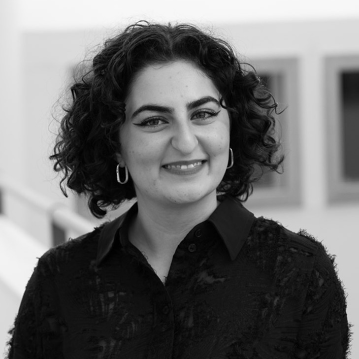
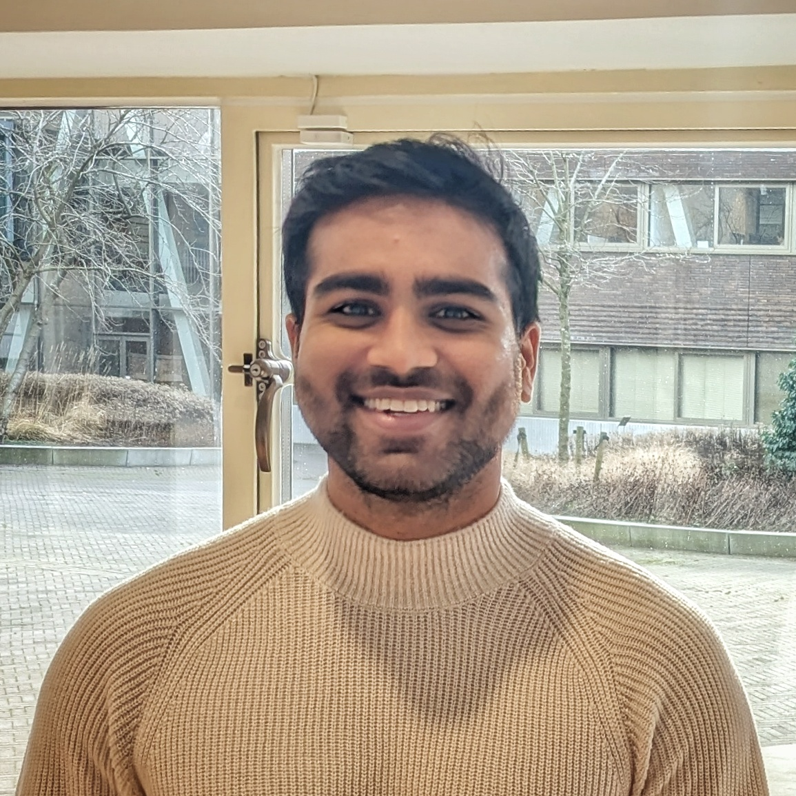
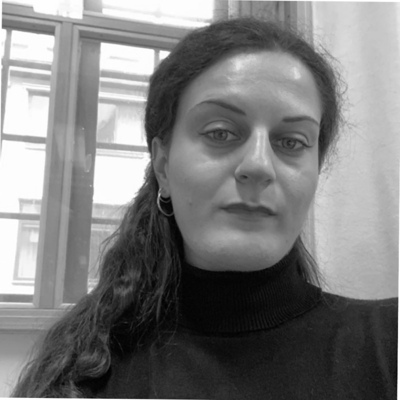
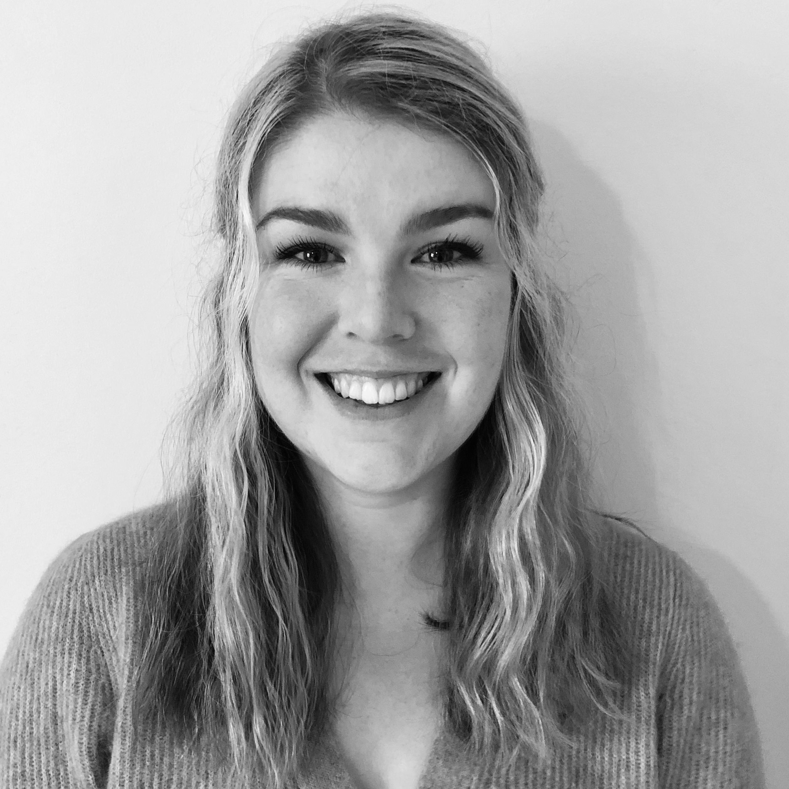
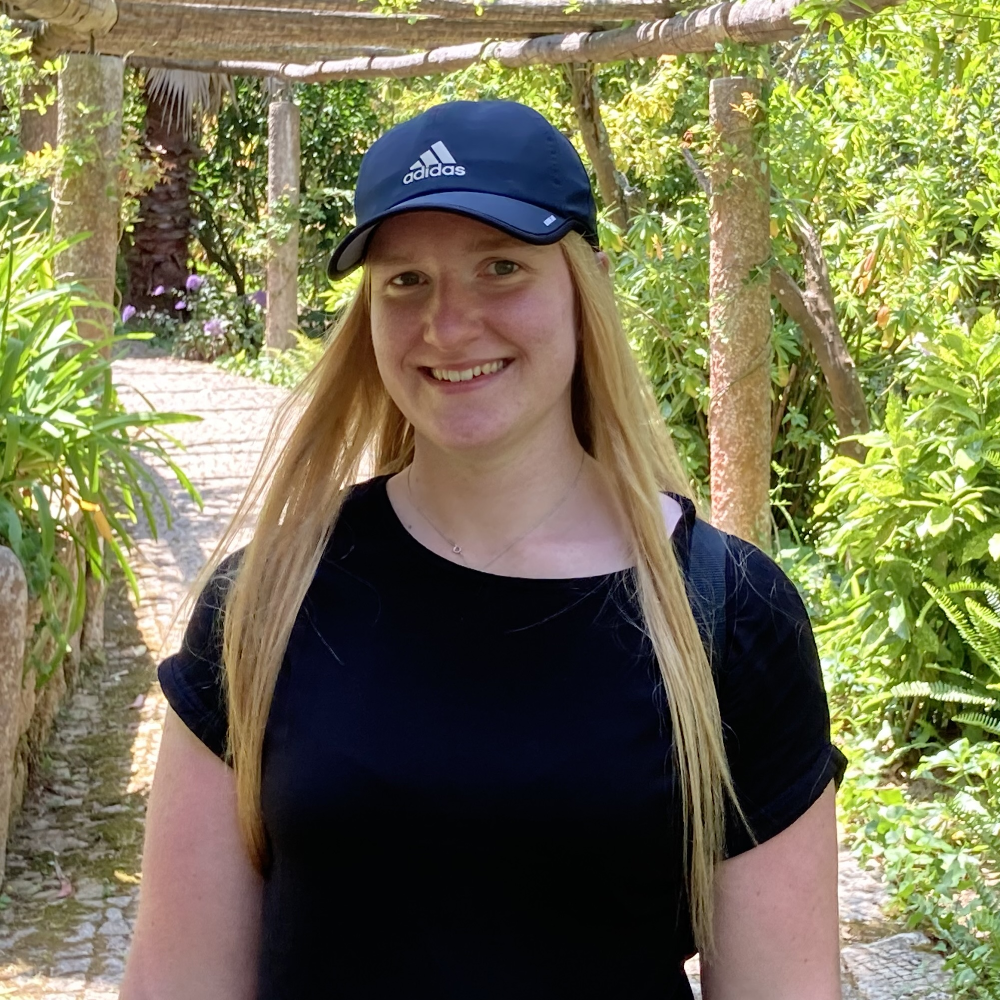
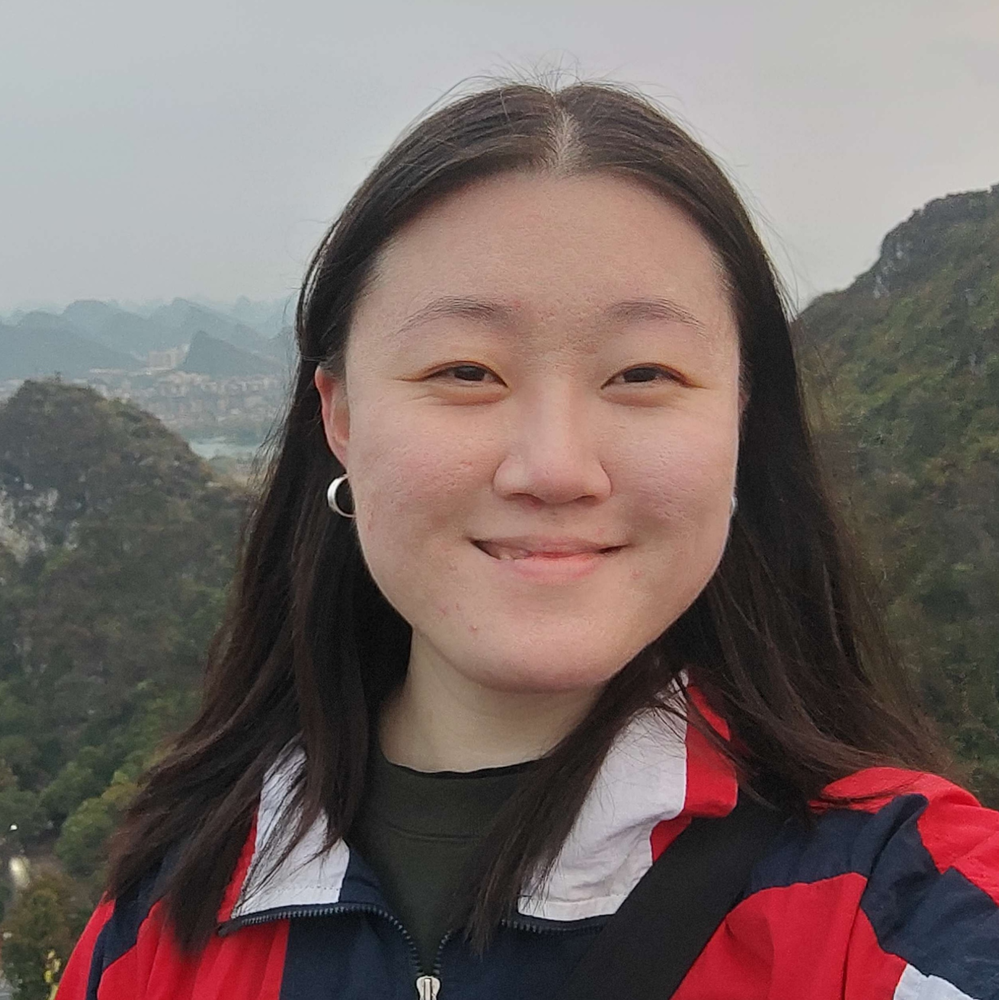
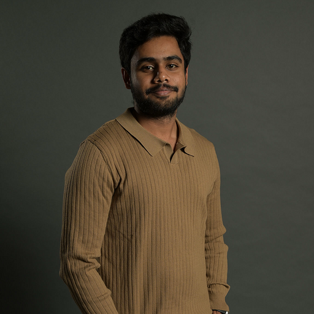
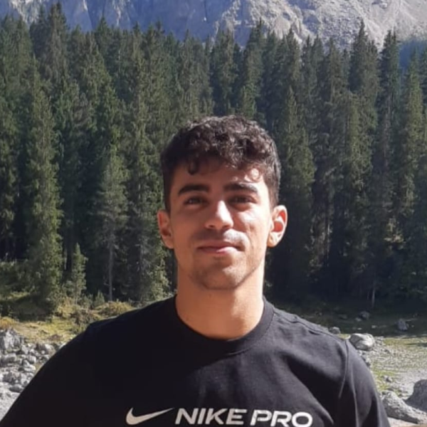

Current PhD Students
-

Sjoerd Hendriks
Focus: Accessible Collaboration around Configurable Tables
Year: 2022 - current
Main supervisor
-

Martina De Cet
Focus: Human-Robot Interaction
Year: 2023 - current
Co-supervised with Ilaria Torre
-

Negin Hashmati
Focus: Agents and Design Fiction
Year: 2024 - current
Co-supervised with Thommy Eriksson
-
Natalia Walczak (Łódź University of Technology)
Focus: Interactive Assistive Technologies for Lower-Limb Mobility
Year: 2023 - current
Co-supervised with Andrzej Romanowski
-

Nischal Lingam (TU Eindhoven)
Focus: Human-Drone Interaction
Year: 2023 - current
Co-supervised with Marieke Martens
Current Master's Thesis Students
-
 Diana Boskovic & Linn Holmgren
Focus: Promoting Energy Efficient Driving Through a Form of Eco Score (in collaboration with Volvo Cars)
-
 Adam El Jabaou & Sofia Sjöblad
Adam El Jabaou & Sofia Sjöblad
Focus: Taxi Drivers and Energy Efficient Battery Range (in collaboration with Volvo Cars)
-
 Paulina Palmberg & Annie Li
Focus: User Experience of Electric Vehicle Energy Use and Range (in collaboration with Volvo Cars)
Current Interns / Research Assistants
-

Dharun Kumar
Focus: Human-Robot Interaction
-

Pietro Cau (University of Trento)
Focus: In-Vehicle Haptics
Completed PhD Students
- Georgios Diapoulis (Co-supervised with Palle Dahlstedt) – Gestural Interaction with Generative Algorithms for Machine Musicianship
Chalmers University of Technology, Sweden (October 2023) - Paweł Woźniak (Co-supervised with Morten Fjeld) – Beyond Gadgetry: Reflection on Tech- and User-Driven Research in Human-Computer Interaction
Chalmers University of Technology, Sweden (April 2016) - Alexandru Dancu (Co-supervised with Morten Fjeld) – Body-centric Projections: Spatial Projection Relative to the Body for Map Navigation
Chalmers University of Technology, Sweden (April 2016)
Completed Master's Thesis Students
- Ebba Lindberg & Linda Silberberg – “Recommendations for Designing a Cross-Device Coaching Experience” (June 2023)
- Maja Ulén & Tara Lynch – “A Single Source of Text: Supporting Text Management in Cross-Functional Organisations” (June 2023)
- Thomas Jinton – “Exploring Augmented Reality Design Recommendations to Create a Safe and Efficient Surveying for the User” (September 2023)
- Svend Gudbjart Geerthsen – “Using Visual Elements Representing the Benefits of Automatic Grade Change to Influence the Use of Automation Features in Paper Mills” (June 2022)
- Emmanuel Brorsson – “Designing to Aid Situation Awareness During Active Ship Bridge Alarms” (June 2022)
- Anna Grafström & Moa Holmgren – “UX Aspects of Interaction with a System of Collaborative Cleaning Robots” (June 2022)
- Florian Hild – “Exploring Design Opportunities of Embedded Interfaces at Historical Cemeteries in the Near Future” (November 2021)
- Patricia Zabecka & Tanvi Vidhate – “Research on Performance with Different Levels of Proactivity from a Digital Assistant Under Time Pressure” (June 2020)
- Alexandra Kandler – “Interactive Technology for People with Colour Vision Deficiency – Translating Colours into Haptic Feedback”
Uppsala University, Sweden (June 2018) - Kari Daniel Karjalainen & Anna Romell – “Human-Drone Interaction: Drone as a Companion? An Explorative Study Between Sweden and Japan”
Chalmers University of Technology, Sweden (June 2017) - Jonas Berglund & Robin Andresson – “Designing for Large Touch Screens: User-Defined Gestural Interactions for Large Touch Screen Displays”
Chalmers University of Technology, Sweden (December 2016) - Marta Carcedo – “Supporting Color-Blind Through Haptic Feedback”
Chalmers University of Technology, Sweden (December 2015)